Part 18
18.BGM: Okay, Everyone!
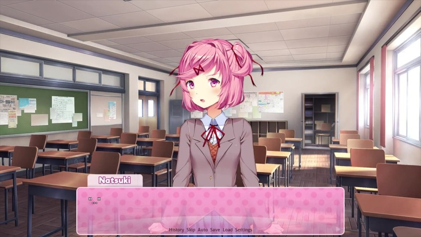
 :
this ones alright.
:
this ones alright. : Alright?": Well, yeah.": About as good as yesterday's, anyway.": I still can't really tell how much you actually care about writing, but either way, you're doing alright.": Even though you're not really spending time with anyone but Yuri...I still think it's nice to have activities that we all participate in. So you better keep working hard!": I mean...I know I'm not President or Vice President or anything...but that doesn't mean you can let me down, okay?": So, at least read mine too for now."
: Alright?": Well, yeah.": About as good as yesterday's, anyway.": I still can't really tell how much you actually care about writing, but either way, you're doing alright.": Even though you're not really spending time with anyone but Yuri...I still think it's nice to have activities that we all participate in. So you better keep working hard!": I mean...I know I'm not President or Vice President or anything...but that doesn't mean you can let me down, okay?": So, at least read mine too for now."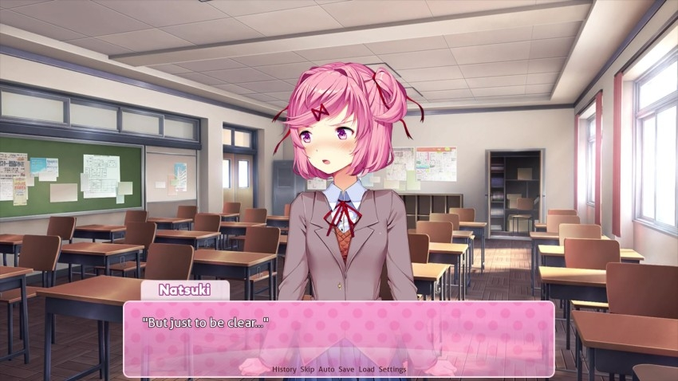
: This poem...means a lot to me. So read it carefully, okay?"BGM: Okay, Everyone! (Natsuki)
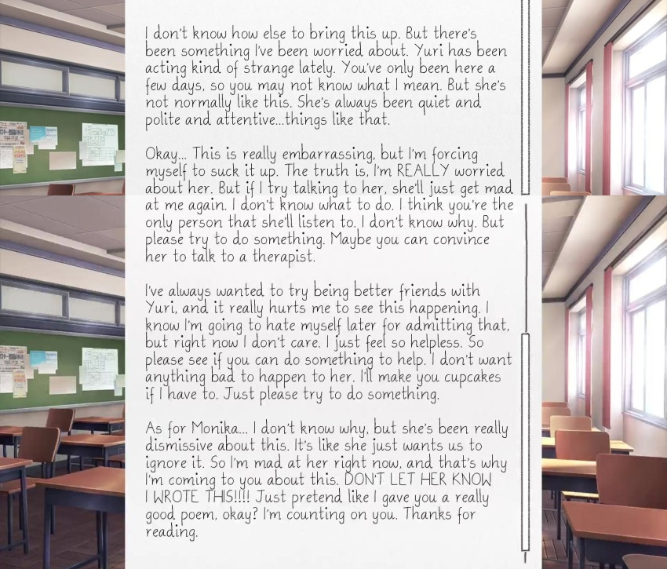
quote:
I don't know how else to bring this up. But there's been something I've been worried about. Yuri has been acting kind of strange lately. You've only been here a few days, so you may not know what I mean. But she's not normally like this. She's always been quiet and polite and attentive...things like that.
Okay... This is really embarrassing, but I'm forcing myself to suck it up. The truth is, I'm REALLY worried about her. But if I try talking to her, she'll just get mad at me again. I don't know what to do. I think you're the only person that she'll listen to. I don't know why. But please try to do something. Maybe you can convince her to talk to a therapist.
I've always wanted to try being better friends with Yuri, and it really hurts me to see this happening. I know I'm going to hate myself later for admitting that, but right now I don't care. I just feel so helpless. So please see if you can do something to help. I don't want anything bad to happen to her. I'll make you cupcakes if I have to. Just please try to do something.
As for Monika... I don't know why, but she's been really dismissive about this. It's like she just wants us to ignore it. So I'm mad at her right now, and that's why I'm coming to you about this. DON'T LET HER KNOW I WROTE THIS!!!! Just pretend like I gave you a really good poem, okay? I'm counting on you. Thanks for reading.
Poem impressions: Man, she's really decided to go freeform on this one.
This 'poem' is one of the reasons I really like Natsuki. She's the only person in this club who seems to realize - and care - that something is really, really wrong. Unlike ol' Mitayo, here, she at least is trying to do something about it. I especially like the 'I'll make you cupcakes if I have to' line - she's desperate to do anything to help, and she knows where her strengths lie.
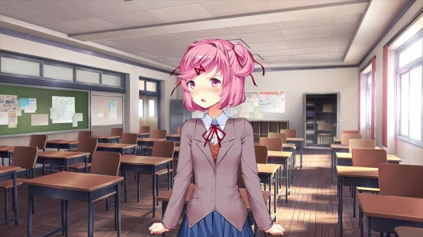
BGM: Music fades out.
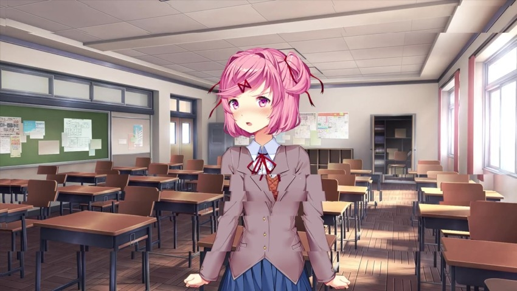
Uh oh.
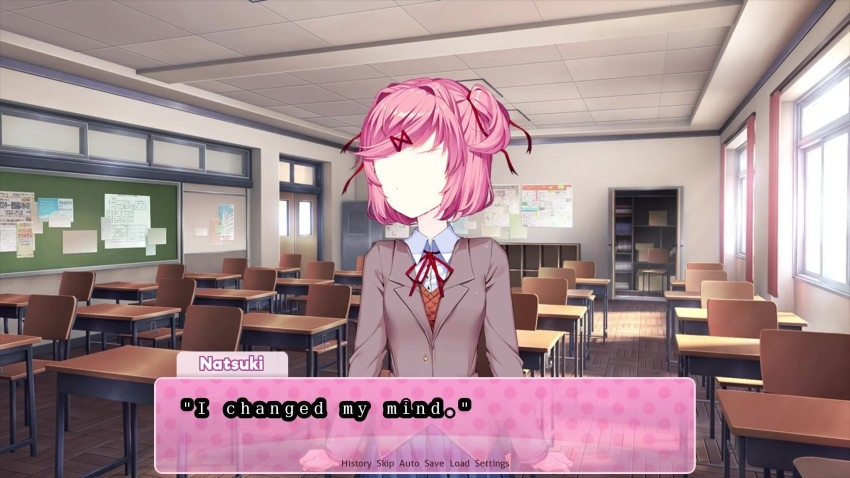
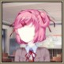: There's-no-point-in-trying-to-do-anything.-It's-Yuri's-own-fault-that-she's-so-unlikable.-Can-you-hear-me,-Mitayo?"
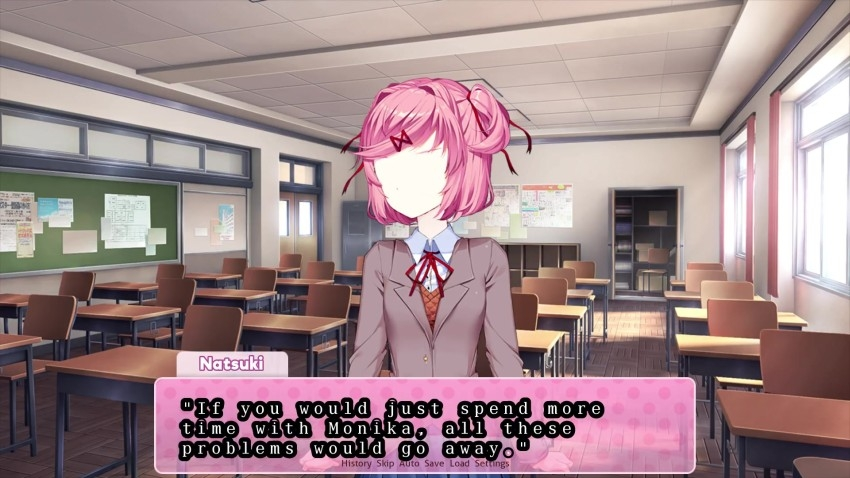
: Yuri-and-I-are-too-messed-up-for-someone-as-wonderful-as-you.-Just-think-of-Monika-from-now-on.
: Just-Monika.
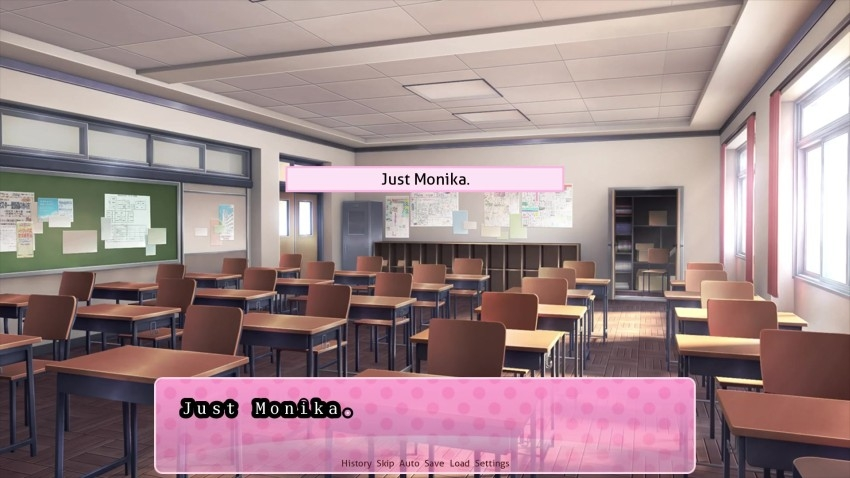
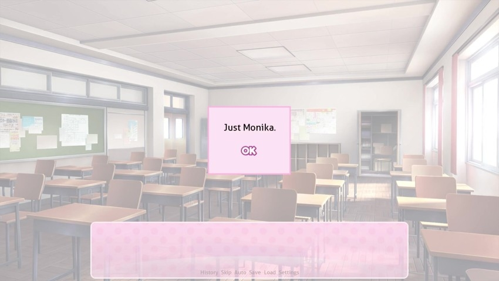
The game restarts at this point...
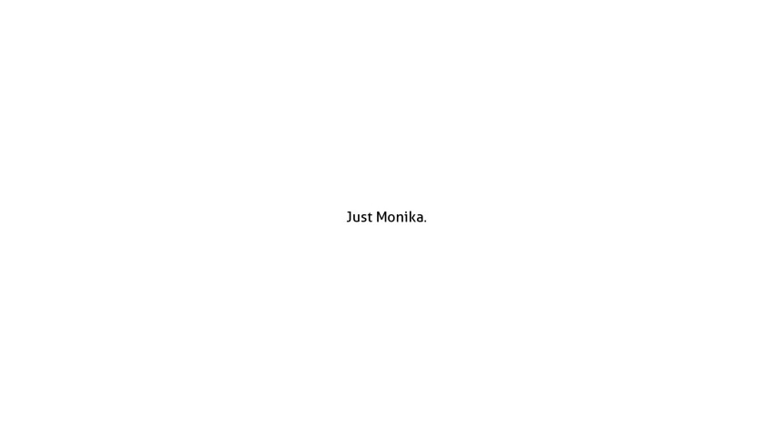
...with a new content warning. It auto-pops us back into the poem choice screen right after this.
There are very faint signs of something unusual going on around here.
Speaking of unusual...
BGM: Okay, Everyone!
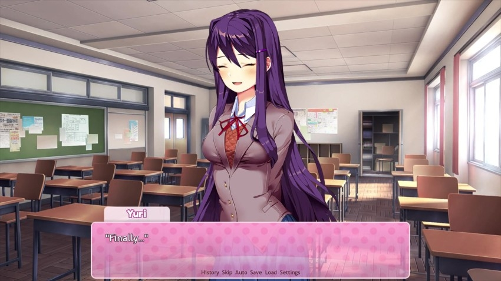
 : Ahaha..."
: Ahaha..."Yuri holds my poem to her face and takes a deep breath.
: I love it. I love everything about it.": Mitayo, I want to take this home. Will you let me keep it? Please?": Sure, I don't care..."I mean most of the words have to do with rainbows and kawaii and kittens and things more suited to Natsuki, but I'm glad that you approve.
: Ahaha. You're too nice to me, Mitayo...I've never met anyone as nice as you.": I could die...n-not really, but--!": I just don't know how to describe it. It's okay to be feeling this way, right?"I'm definitely not the right person to be talking to about this, Yuri.
Yuri holds my poem to her chest.
: I'm going to take this home with me and keep it in my room.": I hope that it makes you feel good when you think about me having it. I'll take good care of it!"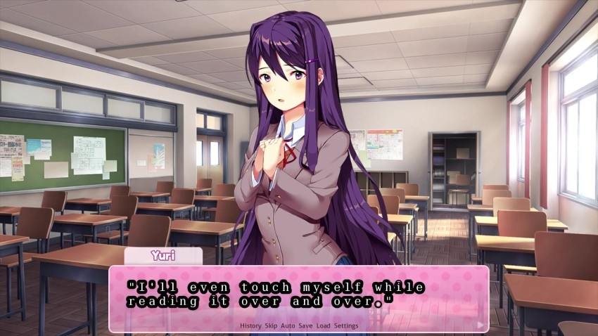
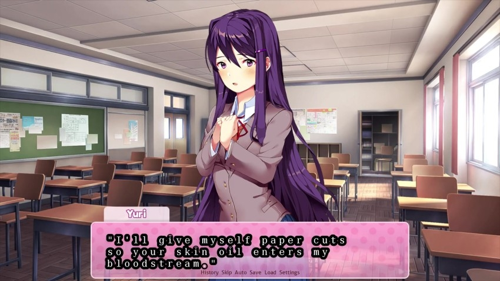
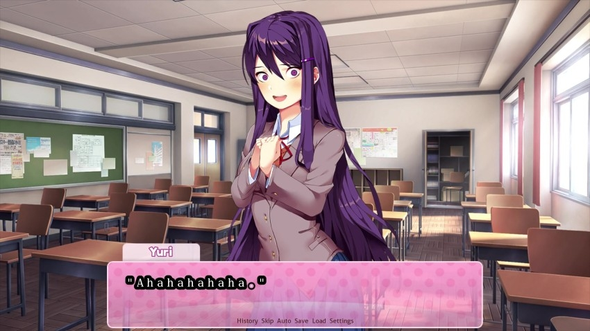
I absolutely do not recommend you doing any of that.
 : You can have my poem too. Besides, after you read it, I know you're really going to want to keep it.": Here, take it. I can't wait any longer. Hurry! Read it!"
: You can have my poem too. Besides, after you read it, I know you're really going to want to keep it.": Here, take it. I can't wait any longer. Hurry! Read it!"BGM: 5_yuri2.ogg. From the wiki: This is a version of Okay, Everyone! and distorted to nearly unrecognizable level. It features ambient music very incongruous to the rest of the soundtrack as well as distorted breathing sounds overlaid over the heavily bit-crushed original theme.
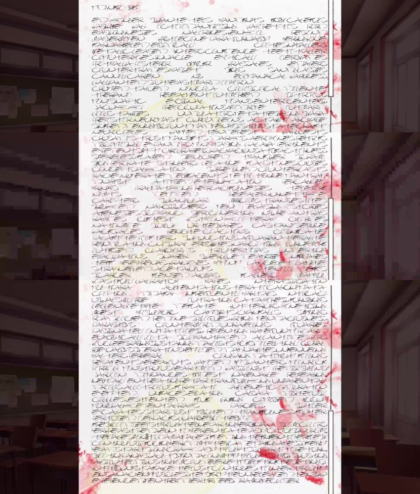
quote:
...uh...
Poem impressions: Can I, uh, not take this? Is that okay? You can keep it...
Also pretty sure that this is blood and...I don't want to know...

GAH. PERSONAL SPACE, YURI.
: I wrote it for you!"
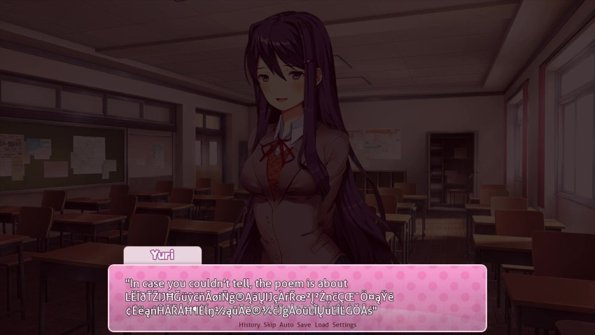
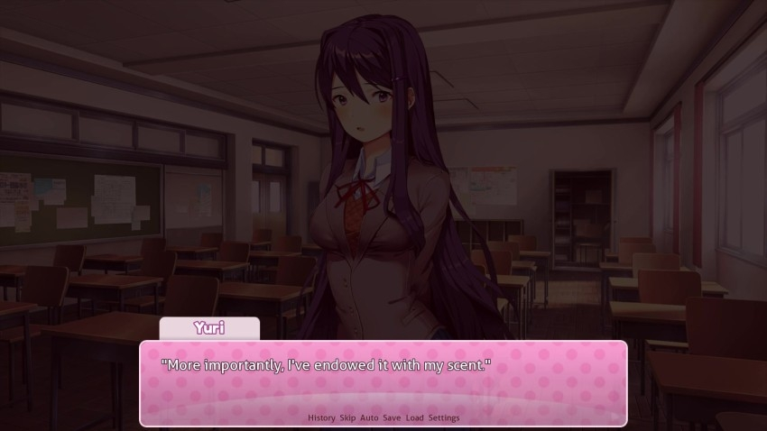
nope nope nope NOPE NOPE NOPE.
: See, aren't I the most thoughtful person in the club?"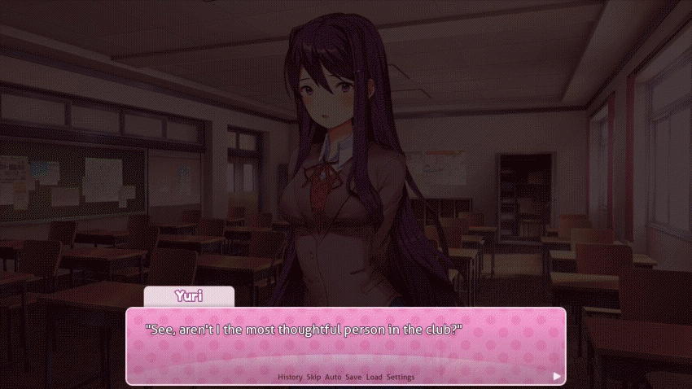
BGM: Okay, Everyone!
: ...": I..."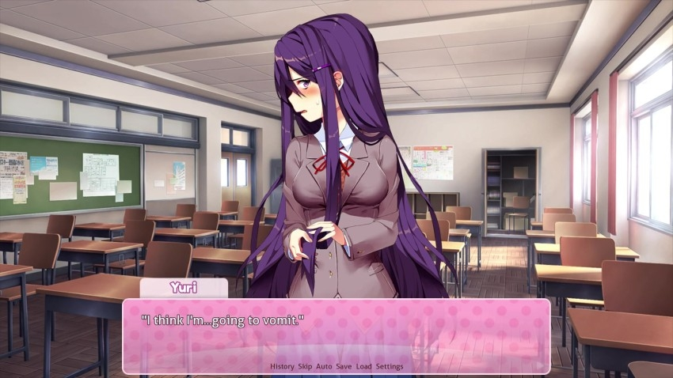
She rushes off screen. Judging by the look on her face, I think that she's actually telling the truth this time.
On to Monika.
In case it's not clear, she's talking about what happened in yesterdays update, not just now.
 : I didn't want to have to tell you this, but I don't think I have a choice. It's getting kind of dangerous for you to spend so much time with Yuri. I don't know why, but she seems pretty easily excitable when she's around you...which shouldn't be a problem in itself.": But when Yuri gets too excited, she finds a place to hide and starts cutting herself with a pocket knife."
: I didn't want to have to tell you this, but I don't think I have a choice. It's getting kind of dangerous for you to spend so much time with Yuri. I don't know why, but she seems pretty easily excitable when she's around you...which shouldn't be a problem in itself.": But when Yuri gets too excited, she finds a place to hide and starts cutting herself with a pocket knife."We know.
We hate it, but we know.
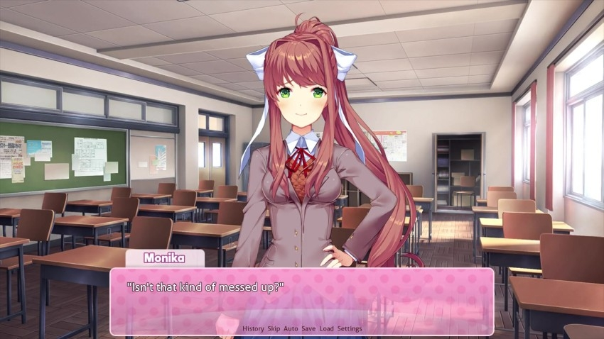
: She even brings a different one to school every day, like she has a collection or something...I mean, it's definitely not because she's depressed or anything like that!": I think she just gets some kind of high from it.It might even be, like, a sexual thing...": But the point is, you've kind of been enabling her. I'm not saying it's your fault, though! But I guess that's why I had to explain it all to you...so I think if you keep your distance, that would probably be best for her.": To put it lightly, I at least have it together in the head...and I know how to treat my club members.": Anyway...I guess we won't worry about your poem...Yuri should have at least had the courtesy of letting you finish sharing it before taking it."I don't want to prejudge things, but I think that Yuri is well beyond courtesy at this point.
: ...Well, whatever. If it makes her happy, I won't stop her.": As for mine...I worked really...really hard on this poem, so...I hope that it's, uh, effective."
Oh God what did this stupid free game do to my computer
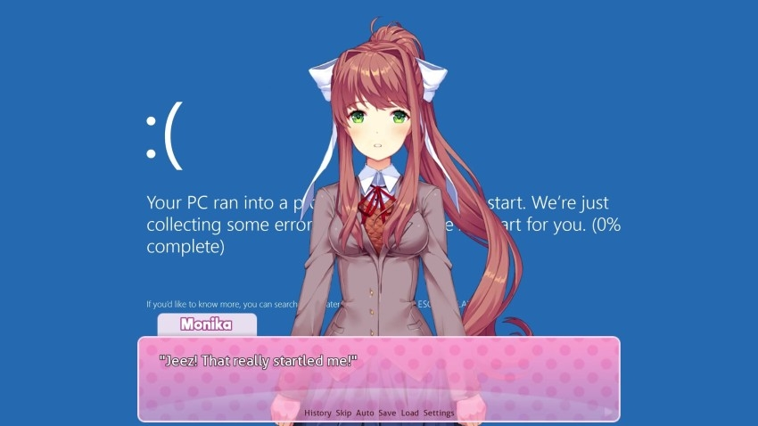
...oh. Okay. Good job, Monika.
: Um...well, I guess I kinda messed up at, uh... 'writing' this poem. I was just trying to...": ...Never mind. Let's just move on..."-----
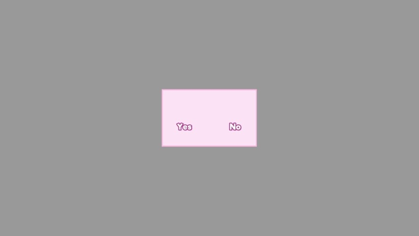
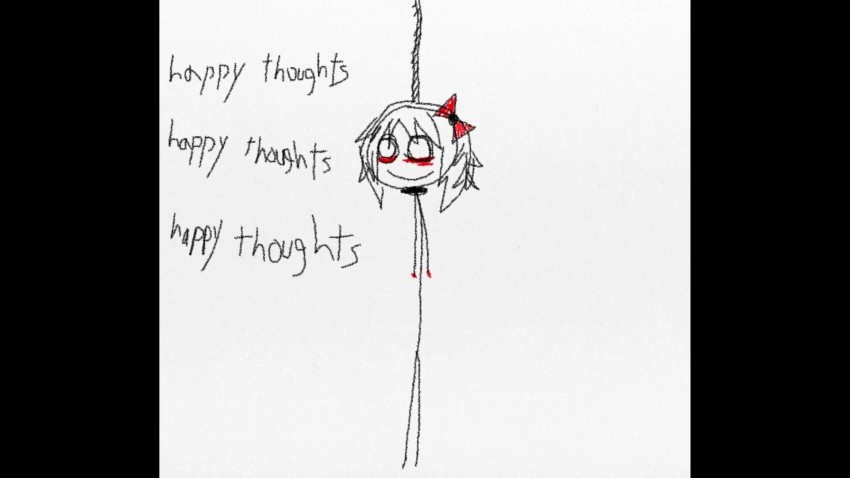
Well that's just mean.
-----
BGM: Doki Doki Literature Club! (modified - no "Doki Doki!" at the beginning)
: It's time to figure out the festival preparations.": ...": Uu...stagnating air is common foreshadowing that something terrible is about to happen..."Last time you said this, you were only sort-of right.
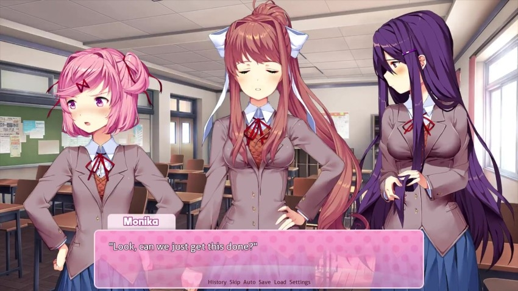
: I'm going to be printing and assembling all the poetry pamphlets.": Natsuki, you can make cupcakes. I know you're at least good at that.":
: Yuri, you can...well, it doesn't matter. Do whatever you want, as long as you think it'll help."Monika's super salty right now. It's quite a change from her usual MO.
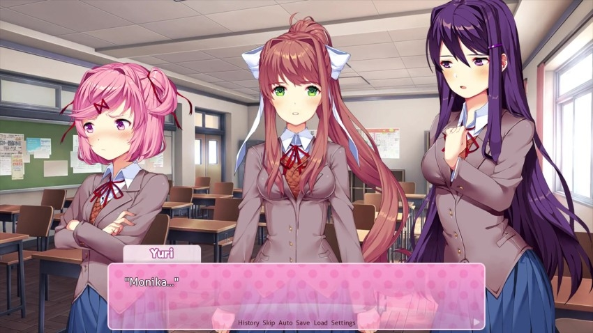
: I'm not useless, you know!": I-I know that!": I already know what I'd like to do. We can't run a successful poetry event without having the right atmosphere for the occasion. So I'm going to make decorations and set up some nice mood lighting.": There, see? That's a great idea! And that gives us all something to do.": Eh? What about Mitayo?"Uh, Mitayo is gonna spend the weekend far, far away from all of you crazies.
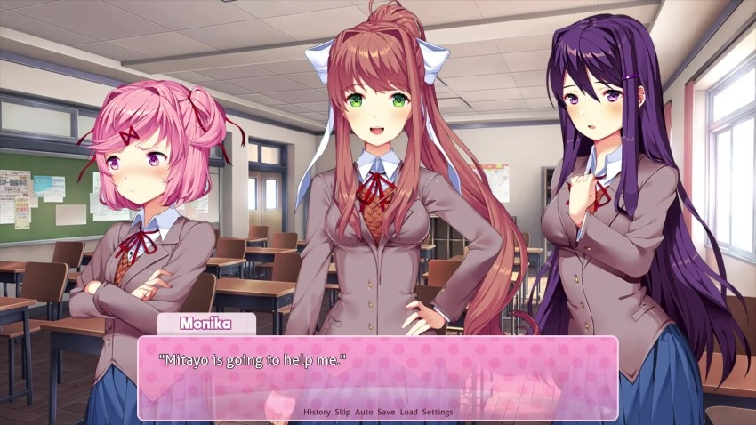
...or not, I guess.
: Wait, you? You have the easiest job, Monika!": Sorry, but that's just how it is.": Like hell it is! What are you trying to pull?": I-I agree with Natsuki! Not only is your work already most suitable for one person...but my task is laborious enough to benefit from an extra pair of hands.": Mine too!": What, your cupcakes? Please."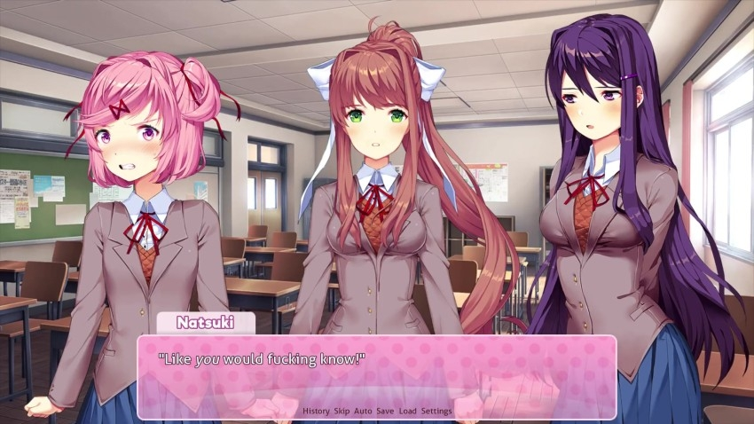
Im gonna take a stab at it and say that theres another argument brewing.
: All you care about now is dragging Mitayo around with you and your stupid books. You and Monika!": Hey! I didn't even do anything!": Okay, then why not let Mitayo decide who to help instead of abusing your power?": I'm not...abusing my power.": Yes you are, Monika. Just let Mitayo make the choice, okay?"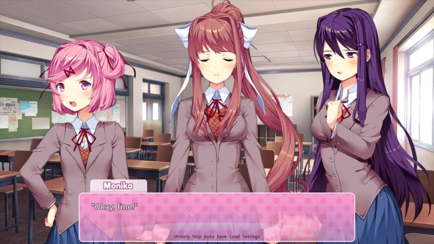
: Fine.": Jeez...Mitayo, I know how fed up you are with these two by now. We can just--"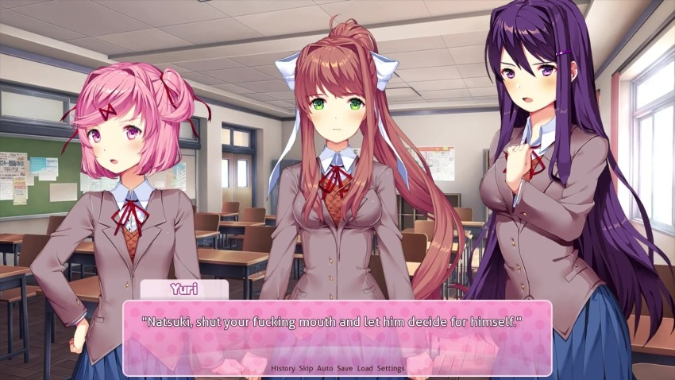
: You shut your mouth!": Jesus christ...": This is never going to end. Just make the choice, okay?"
So, it's kind of hard to see, but the cursor is magnetically drawn to Monika. We can, however, force the cursor to pick on Natsuki or Yuri
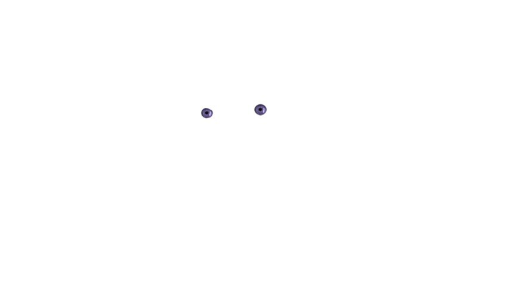

...but the game compensates for that. Whatevers going on in this game, one things for clear: Mitayos illusion of choice has disappeared entirely.
As proof of this, Mitayo has only said two things this entire update.
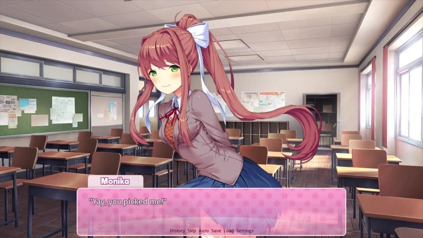
: We can meet at your house this weekend. I promise it'll be fun. Is Sunday okay with you?": Are you fucking kidding me? This isn't fair at all!": It is fair, Natsuki. It's what he chose.""Chose".
: No, it's not fair! Giving us all this work and then taking Mitayo for yourself. What a shameful thing to do!": Yuri, I didn't even give you any work. You decided it for yourself. You're being a little unreasonable here."BGM: Music stops abruptly.
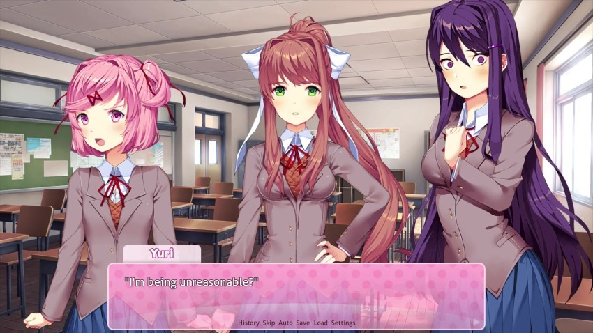
: Ahahaha!"
: Monika, I can't believe how delusional and self-important you are!"
: Pulling Mitayo away from me every single time you're not included in something."
: Are you jealous?"
: Crazy?"
: Or maybe you just hate yourself so much that you take it out on others?"
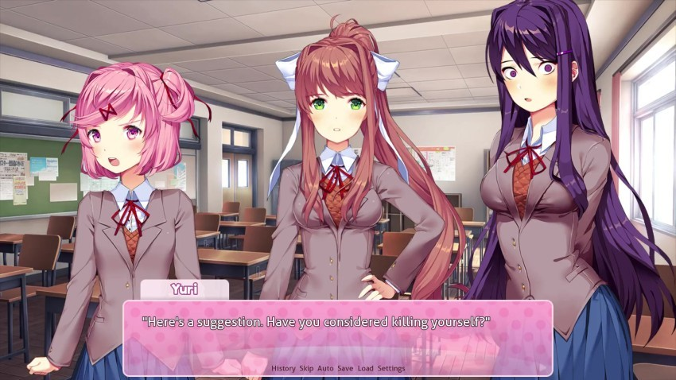
Yuri has reached the edge and flung herself off of it, folks.
: Yuri, you're scaring me a little...": Natsuki, let's just go. I don't think she wants us around right now.": See, that wasn't very hard."
: All I want is to spend a little time with him."
: Is that so much to ask?"
Yuri follows Monika and Natsuki to the door.
: Hey, Mitayo...Monika giggles as Yuri pushes her out the door.
Oh God no, please don't leave me here alone with-
: Finally."Eyyyyyy Yuri, how ya' doin...?

BGM: 10-yuri.ogg. From the wiki: This is a corrupted version of My Confession. The original track distorts very slightly in pitch, is heavily reduced in quality, and is reversed in parts. In addition, a track of a woman breathing heavily and occasionally laughing is overlaid upon the music. Its just awful.
: This is really all I wanted.": Mitayo, there's no need to spend the weekend with Monika.": Don't listen to her. Just come to my house instead.": The whole day, with just the two of us...doesn't that sound wonderful?": Ahahaha!"
: Wow... There's really something wrong with me, isn't there?"
: But you know what?"
: I've never felt this good my whole life."
: Just being with you is a far greater pleasure than anything I could imagine."
: I'm addicted to you. It feels like I'm going to die if I'm not breathing the same air as you."
: Doesn't it feel nice to have someone care about you so much? To have someone who wants to revolve their entire life around you?": But if it feels so good...": Then why does it feel more and more like something horrible is going to happen?"
: Maybe that's why I tried stopping myself at first..."
: But the feeling is too strong now.": I don't care anymore, Mitayo! I have to tell you!"
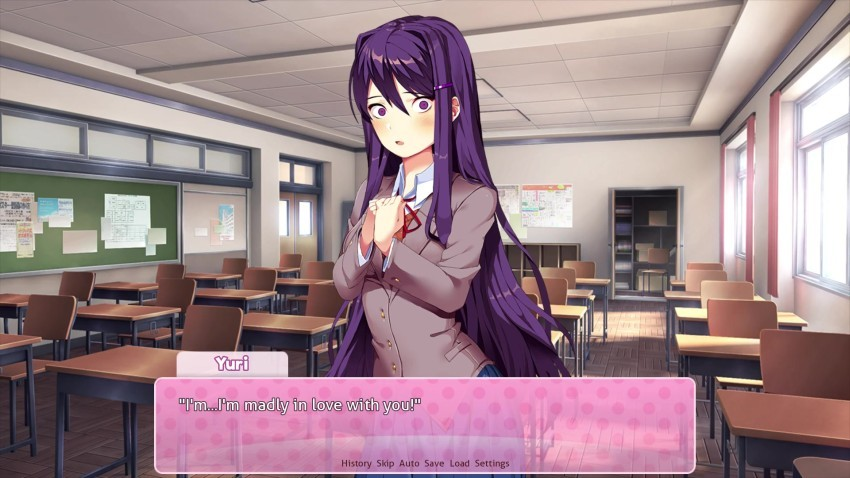
Not like this, Yuri.
Not like this.
: It feels like every inch of my body...every drop of blood in me...is screaming your name."
: I don't care what the consequences are anymore! I don't care if Monika is listening!"
: Please, Mitayo, just know how much I love you."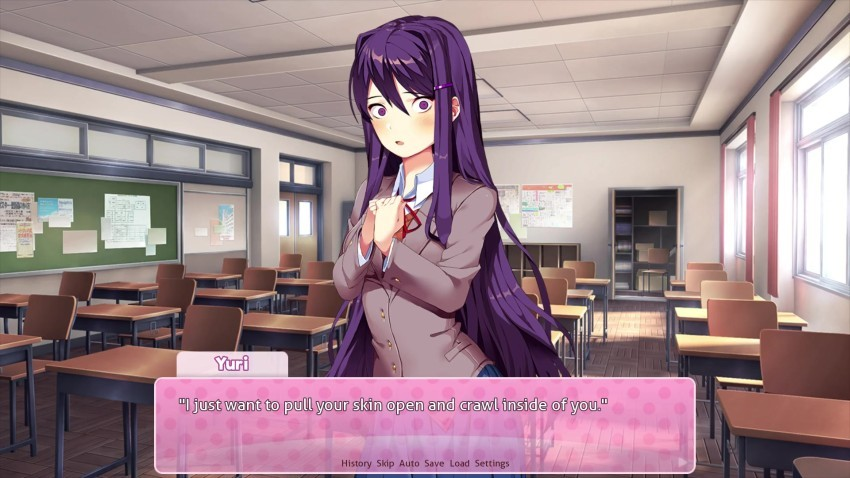
: I want you all to myself.": And I will be only yours.": Doesn't that sound perfect?": Tell me, Mitayo.": Tell me you want to be my lover.": Do you accept my confession?"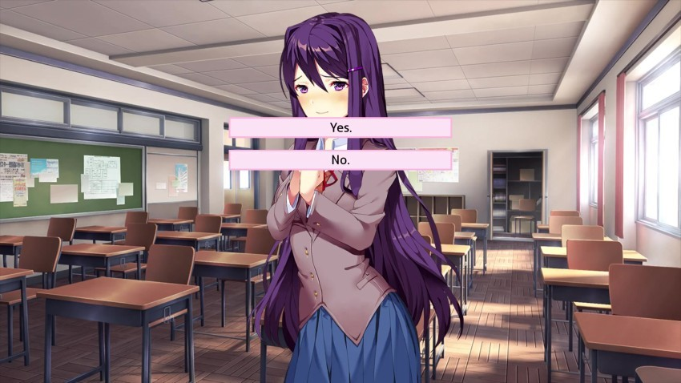
Oh no you dont. Dont you dare put this evil on me.
You guys wanted Yuri - this is all on you.
VOTE TIME: Do we accept Yuris confession of love?
*YES.
*NO.
Raw Video File (for today and yesterday): Part One Part Two
This game or my computer in relation to this game does not like OBS at all.